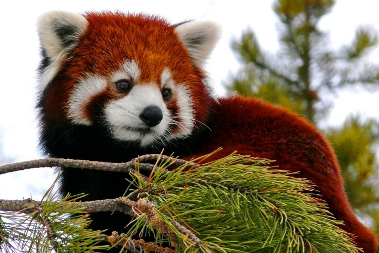
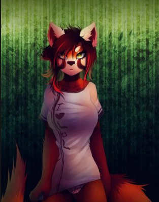
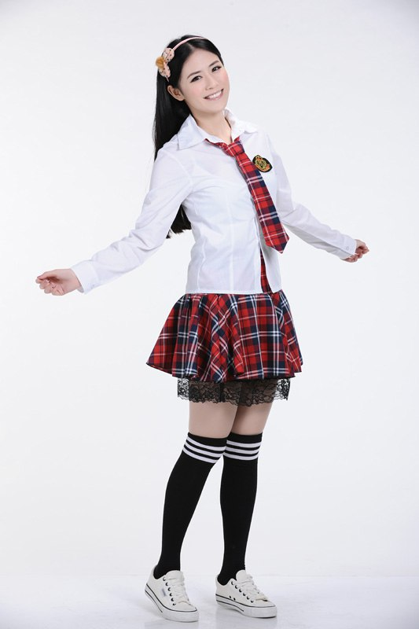

Назад, к выбору <----
1. Элис Нортвейл
2. 17
3. Ж
4. Би
5. Красная панда
6.
- Спортивное
- Жёлтые, обычные
- Шерсть, интересный раскрас, как у красных панд, очень приятная и пушистая.
- Большой, толстый и пушыыыыыыыыыыыстый
- Голос в аудиозаписи
- Домашняя на фото, а так школьная форма (хер знает, как это всё называется, но фото приложу).
7. Милая девушка, приятная в общении и неплохо учится. Она конечно не отличница (не зубрила), хорошистка.
Сразу после перехода в новую школу примкнула к черлидерам. Всегда готова помочь своим друзьям и близким.
Ни парня ни девушки не было. Не знакома с большей частью школы так как здесь новенькая. Хоть ей и 17, но её рост очень мал.
Она ниже всех одногодок и даже тех, кто младше её на год, рост на уровне 6-7 классов.
